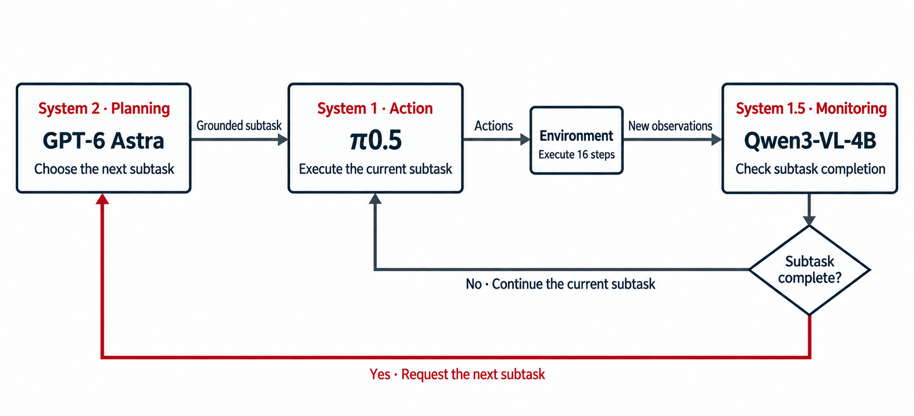
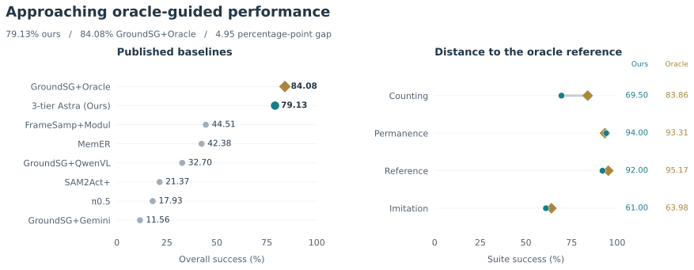

BinFill
Hard · test ep023 · Success · 663 stepsput two blue cubes and one green cube into the bin, then press the button to stop
A Three-Tier System for Memory-Augmented Manipulation
Stanford University
Memory-augmented robotic manipulation uses past observations to guide present actions, requiring visual histories to be understood and translated into executable subtasks. We present a three-tier system: System 1, a low-level vision-language-action model (VLA), executes actions; System 2, GPT-6 Astra, performs high-level planning; and System 1.5, a small learned vision-language model, monitors subtask completion. Astra interprets the task and its visual context to generate a grounded subtask. The VLA executes this instruction over successive action chunks, while a small vision-language model checks whether the subtask has finished. Completion events trigger new planning calls, separating frequent progress checks from expensive high-level reasoning. This design brings Astra’s planning capabilities into a closed-loop controller while avoiding a new Astra request at every action chunk. On 800 official RoboMME test episodes across 16 tasks, the controller achieves 79.13% success with an average of 3.63 Astra calls per episode and an average wall-clock episode duration of 80.84 seconds. This nearly matches the 84.08% success rate of GroundSG+Oracle, an oracle-guided upper-bound reference for grounded-subgoal policies.
Many robot tasks depend on information that is no longer visible. A demonstration may specify the order of several actions; a target may disappear under a container; a moving object may need to pass a location a certain number of times. RoboMME [1] brings these challenges together: the robot must understand what happened earlier to choose the right action now.
Hierarchical systems such as MEM [2] and τ₀-VLA [3] offer a natural starting point: a high-level VLM decides the next subtask, and a low-level VLA executes it. In our development experiments, small high-level VLMs struggled with complex RoboMME video inputs and produced incorrect subtasks. This motivated us to put Astra in charge of high-level understanding and planning.
But a robot does not need to reconsider the entire task every time it takes another action. Once a subtask has been chosen, execution may continue for many action chunks. Repeatedly asking Astra to process the visual history during this period adds inference work even when the next instruction should remain unchanged.
Our solution is System 1.5: a small visual completion monitor that connects planning and action. System 2 (Astra) decides what to do; System 1 (the low-level VLA) carries it out; System 1.5 decides when it is time to ask the planner again. This gives the small model a focused job while keeping complex video understanding with the stronger planner.

The controller separates three decisions: what to do next, how to execute it, and when to move on. Astra plans a grounded subtask, the VLA carries it out, and a small visual monitor checks completion.
Let g denote the task instruction, o_t the current observation, and l_k the active grounded subtask. Here, t indexes environment steps and k indexes subtasks.
Astra chooses one grounded subtask at a time—an executable instruction with a target location where needed. We express the high-level policy as
The memory m_t collects relevant demonstration and execution history, together with subtask progress. This context helps Astra locate objects that have become hidden or follow a demonstrated action order. Each planning call combines that history with the current scene to select the next subtask.
A π0.5 VLA fine-tuned for grounded-subgoal execution carries out the active subtask through a low-level policy,
Here, a_{t:t+H} is an action chunk and o_t includes camera observations and robot state. The same l_k can guide multiple chunks: the instruction stays fixed while fresh observations guide the next actions.
A Qwen3-VL-4B model fine-tuned for completion detection predicts whether the active subtask has finished,
The visual context v_t combines recent observations with a reference from the start of the subtask. The binary output indicates whether execution should continue or the planner should be consulted. This focused question lets the small model monitor execution while Astra handles task interpretation and planning.
After each action chunk, the monitor determines whether to continue or request a new plan. A false result keeps the VLA working on the same instruction; a true result normally records completion and triggers Astra to select the next subtask. This loop ties replanning to detected progress instead of requesting a new plan after every action chunk.
Frequent progress checks run through the local monitor, reserving Astra calls for initial planning and subtask transitions.
We initially tried running Astra and the VLA asynchronously, allowing the VLA to continue executing while Astra planned the next subtask. In these preliminary tests, most episodes timed out: the VLA exhausted the 1,300-step budget before Astra returned the next subgoal. For the reported experiments, we therefore follow the synchronous execution used in RoboMME’s official two-system evaluation implementation, pausing the simulation during planner inference. These waits add wall-clock time but do not consume environment steps.
We evaluated our pipeline on 800 official RoboMME test episodes across 16 tasks, with 50 episodes per task, following RoboMME’s official evaluation protocol.
Our controller achieves 79.13% success, approaching GroundSG+Oracle’s 84.08%. Baselines include the current-observation policy π0.5 [4], the visual-history method FrameSamp+Modul, SAM2Act+ [6] (visual memory bank), and three VLM–VLA dual-system methods: MemER [5] (keyframe memory), GroundSG+QwenVL (fine-tuned planner), and GroundSG+Gemini (prompted planner) [1]. GroundSG+Oracle supplies ground-truth subgoals to the low-level VLA, providing an empirical upper-bound reference for our approach. Baseline scores come from the official RoboMME leaderboard.

| Method | Counting | Permanence | Reference | Imitation | Overall |
|---|---|---|---|---|---|
| π0.5Current-observation policy | 28.78 | 17.00 | 17.16 | 8.78 | 17.93 |
| GroundSG+GeminiGrounded subgoals · prompted VLM | 12.75 | 15.75 | 11.25 | 6.50 | 11.56 |
| GroundSG+QwenVLGrounded subgoals · fine-tuned VLM | 38.00 | 39.34 | 31.56 | 21.89 | 32.70 |
| SAM2Act+Visual memory bank | 35.33 | 26.00 | 16.83 | 7.33 | 21.37 |
| MemERVisual keyframes + symbolic subgoals | 48.83 | 53.17 | 38.00 | 29.50 | 42.38 |
| FrameSamp+ModulPerceptual memory | 65.22 | 25.11 | 36.33 | 51.39 | 44.51 |
| 3-tier Astra (Ours)Astra planner + learned monitor | 69.50 | 94.00 | 92.00 | 61.00 | 79.13 |
| GroundSG+OracleGround-truth subgoals · reference | 83.86 | 93.31 | 95.17 | 63.98 | 84.08 |
Our Astra-based controller outperforms all three dual-system baselines across all four task suites. Overall success reaches 79.13%, compared with 42.38% for MemER, 32.70% for GroundSG+QwenVL, and 11.56% for GroundSG+Gemini. The largest gains over MemER, the strongest of these dual-system baselines, appear in Permanence and Reference: our method achieves 94.00% and 92.00%, versus 53.17% and 38.00%. On Imitation, which requires interpreting demonstrated behavior, success rises from 29.50% to 61.00%.
These results support pairing Astra’s visual and temporal reasoning with completion-triggered planning for memory-dependent manipulation. Astra uses demonstrations and execution history to choose the next grounded subtask, while the monitor checks whether that subtask has finished. This division keeps Astra focused on decisions that require broader context and lets the VLA continue executing between planning events. The resulting controller combines strong task performance with infrequent Astra calls, as quantified below.
| Task | Success | Fail | Timeout | Success rate |
|---|---|---|---|---|
| BinFill | 41 | 6 | 3 | 82.00% |
| StopCube | 9 | 41 | 0 | 18.00% |
| PickXtimes | 48 | 1 | 1 | 96.00% |
| SwingXtimes | 41 | 9 | 0 | 82.00% |
| ButtonUnmask | 50 | 0 | 0 | 100.00% |
| VideoUnmask | 46 | 1 | 3 | 92.00% |
| VideoUnmaskSwap | 50 | 0 | 0 | 100.00% |
| ButtonUnmaskSwap | 42 | 6 | 2 | 84.00% |
| PickHighlight | 42 | 0 | 8 | 84.00% |
| VideoRepick | 43 | 3 | 4 | 86.00% |
| VideoPlaceButton | 50 | 0 | 0 | 100.00% |
| VideoPlaceOrder | 49 | 0 | 1 | 98.00% |
| MoveCube | 40 | 4 | 6 | 80.00% |
| InsertPeg | 9 | 5 | 36 | 18.00% |
| PatternLock | 44 | 6 | 0 | 88.00% |
| RouteStick | 29 | 21 | 0 | 58.00% |
| Overall | 633 | 103 | 64 | 79.13% |
Our pipeline averages 3.63 Astra calls per episode. A two-system controller calling Astra before every VLA action chunk would require an estimated 24.62 calls per episode over the same recorded execution sequences. This corresponds to 85.3% fewer Astra calls: the small local monitor handles frequent completion checks, allowing the VLA to reuse a subtask across multiple action chunks.
Successful hard-difficulty test episodes, with one featured task per suite. Expand each suite for the remaining examples. The central robot view plays continuously; System 1.5’s completion checks (red: false; green: true) and System 2’s subgoals update alongside it.
Nine video-conditioned tasks begin with their archived input demonstration, followed by execution. Input frames are displayed at 30 fps; their original timing was not recorded. Execution plays at 30 environment steps/s; highlights mark logged updates and inference waits are omitted.
put two blue cubes and one green cube into the bin, then press the button to stop
pick up the blue cube and place it on the target, repeating this action four times, then press the button to stop
pick up the red cube, move it to the top of the right-side target, then move it to the top of the left-side target, repeating this back-and-forth motion three times, finally press the button to stop
press the button to stop the cube just as it reaches the target for the fourth time
first press both buttons on the table, then pick up the container hiding the green cube, finally pick up another container hiding the red cube
first press the button, then pick up the container hiding the red cube, finally pick up another container hiding the green cube
watch the video carefully, then pick up the container hiding the green cube, finally pick up another container hiding the blue cube
watch the video carefully, then pick up the container hiding the blue cube, finally pick up another container hiding the green cube
first press the button, then pick up all cubes that have been highlighteted with white areas on the table
watch the video carefully, then pick up the same block that was previously picked up again, finally put it down and press the button to stop
watch the video carefully, then place the red cube on the target right after the button was pressed
watch the video carefully, then place the green cube on the third target it was previously placed on
watch the video carefully, then use the stick attached to the robot to navigate around the sticks on the table, following the same path
watch the video carefully, then move the cube to the target in the same manner as before
watch the video carefully, then grasp the same end of the same peg you've picked before and insert it into the same side of the box
watch the video carefully, then use the stick attached to the robot to retrace the same pattern
A more capable planner does not need to run at the same frequency as the action policy. Our three-tier system assigns low-level action execution to System 1, high-level reasoning to System 2, and frequent progress checks to System 1.5. The completion signal connects them into a closed loop.
The system can still make planning, monitoring, or execution errors. But the design offers a practical way to use a strong reasoning model in long-horizon manipulation: ask it for the next subtask when progress calls for a new decision.
If you find this work useful, please consider citing it:
@misc{chen2026astraonrobomme,
title = {Can {Astra} Solve {RoboMME} without Breaking the Bank?},
author = {Chen, Bingao and Fang, Haoquan and Liu, C. Karen},
year = {2026},
url = {https://github.com/bingaochen/Astra-on-RoboMME}
}